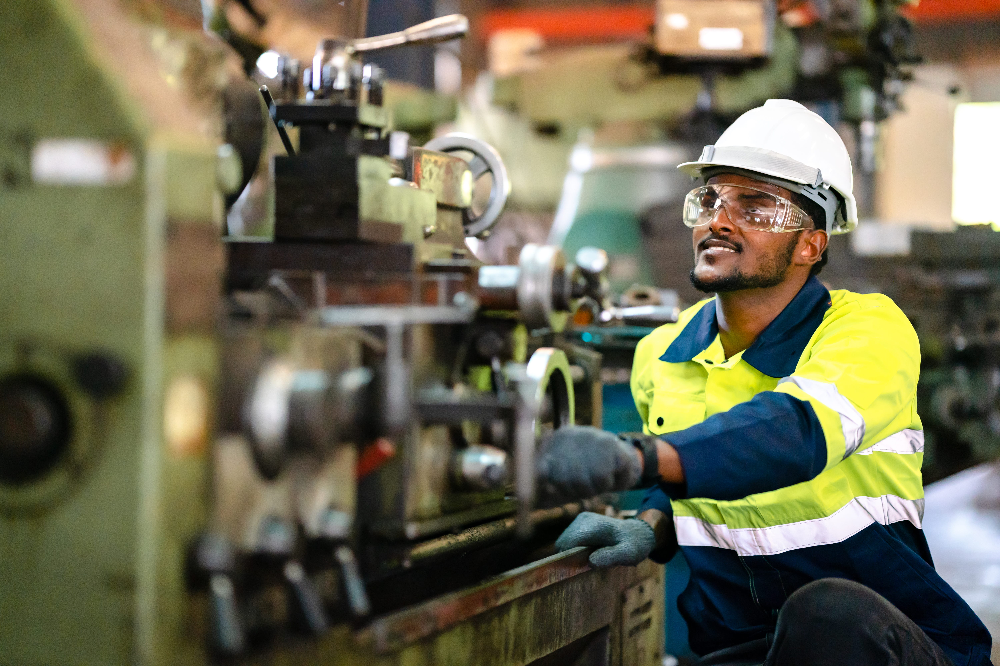
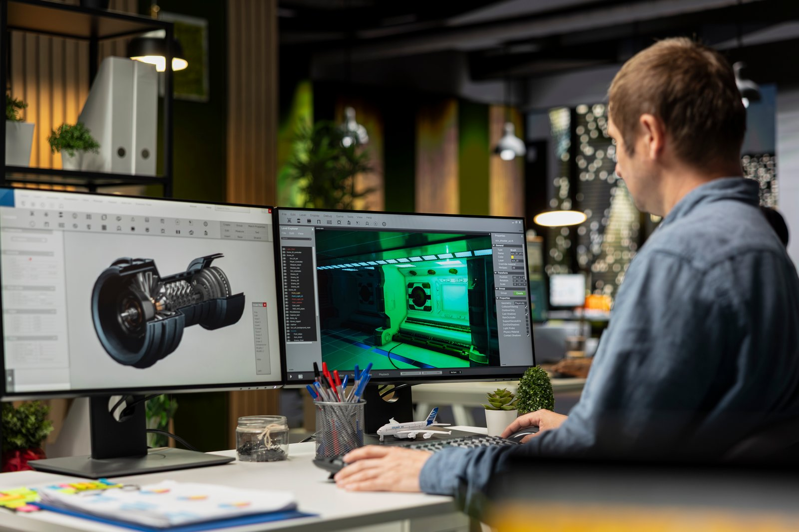
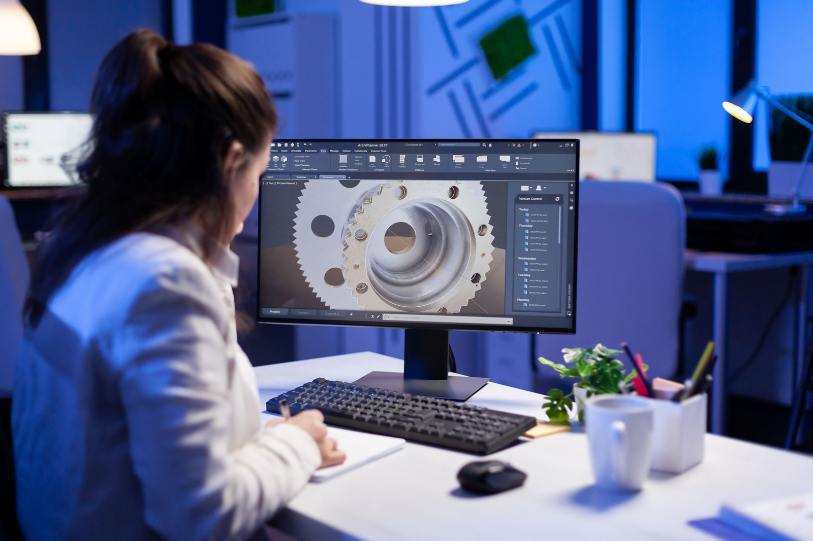

01AUTODESK MANUFACTURING NEXTEXCLUSIVE LEADERSHIP FORUM
DESIGNMAKEDATA.
One connected workflow. Better products, faster decisions and more agile manufacturing.
COUNTDOWN TO THE FORUM
EVENT CONCLUDED · 23 OCT 2026
23OCTOBER 2026
FARIDABAD, INDIA
FARIDABAD, INDIA
One connected
workflow.
Manufacturers are under pressure to bring better products to market faster, manage increasing product complexity, improve manufacturing efficiency and respond quickly to change.
Many organisations still rely on disconnected engineering data, manual processes and fragmented handoffs. Autodesk Manufacturing Next, presented with Fast Company India, explores how connected design, engineering and manufacturing can move work forward.
Explore the programme ↗

Connect design
to manufacturing
with confidence.
DESIGN BETTER ✳ MAKE FASTER ✳ CONNECT THE DATA ✳
Better products
need connected teams.
Manufacturing leaders and Autodesk specialists share the decisions, workflows and ideas shaping what comes next.
SCROLL TO MOVE THROUGH THE ROOM01 — 04
Big questions.
Better making.
Four connected ideas for the next generation of manufacturing.
Scroll to move through each question
THE FORUM / THEME 01
Engineer better
products, faster.
Reduce design and engineering cycle time, increase reuse and automation, and improve product quality through earlier validation.
SCROLL TO CONTINUE ↓A focused morning
for what’s next.
From leadership perspectives to practical DESIGN, MAKE and DATA sessions, followed by peer discussion and networking.
Coffee, introductions and networking with manufacturing peers.
Manufacturing is changing. So is the way we compete.
Manufacturing leaders discuss engineering complexity, disconnected processes, product change, design-to-manufacturing handoffs and where automation can create measurable value.
Where is friction costing your organisation? A short pulse across design, engineering data, manufacturing and automation.
A manufacturing customer shares the business challenge, where they started, what changed and the outcomes achieved.
Reduce design and engineering cycle time, increase reuse and automation, and improve product quality through earlier validation.
Reduce manual handoffs and production rework, improve manufacturability, automate repetitive processes and shorten the path to production.
Create trusted product and manufacturing information, improve collaboration and strengthen change visibility and traceability.
Key takeaways and moving from conversation to action.
Continue discussions with manufacturing peers and Autodesk specialists, followed by networking lunch.
Followed by closing perspectives and a networking lunch.
ONE CONNECTED WORKFLOW
Design.
Make.
Data.
AUTODESK MANUFACTURING NEXT
FARIDABAD · INDIA
SCROLL TO MOVE CLOSERNEXT / THE CONVERSATION
Presented with
Fast Company
India.
AAutodeskTECHNOLOGY PARTNER
FCIFast Company IndiaMEDIA PARTNER
DESIGN BETTER.MAKE FASTER.MOVE FORWARD.
AUTODESK MANUFACTURING NEXT
Join theconversation.
Bring your perspective to the next manufacturing conversation. Explore how connected design, engineering data and manufacturing can help teams work better together.
23
OCTOBER 2026
FARIDABAD, INDIA
Presented in association with Fast Company India.
Register now ↗ Registration details are provided by the event team.